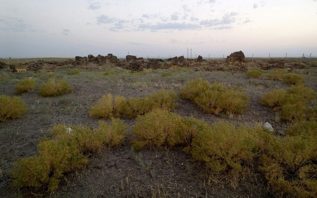

Startseite › Sehenswürdigkeiten nach Provinzen › Aksaray
Der Kültür-Varlıkları-Führer verzeichnet 12 Orte in Aksaray: 4 ausgrabungsstätte, 3 burg & historisches bauwerk, 2 unterirdische stadt, 1 museum, 1 sakralbau, 1 see. Unten finden Sie die Höhepunkte, eine Karte und die vollständige Liste.
⭐ Höhepunkte

1 · Aksaray · AusgrabungsstätteAcemhöyük
Acemhöyük bei Yeşilova nordwestlich von Aksaray ist ein ausgedehnter Hügel, der in der Bronzezeit zu den größten Handelszentren Anatoliens gehörte.

2 · Aksaray · AusgrabungsstätteKlostertal von Aksaray
Das Klostertal erstreckt sich neben Güzelyurt und ist voller in den Fels gehauener Kirchen, Kapellen und Wohnräume.

3 · Aksaray · MuseumMuseum Aksaray
Das Museum Aksaray vereint die jahrtausendealte Geschichte der Stadt, des westlichen Tors nach Kappadokien.
🗺 Auf der Karte
📍 Alle Orte (12)
Ausgrabungsstätte (4)
AcemhöyükAusgrabungsstätteKlostertal von AksarayAusgrabungsstätte Siedlungshügel AşıklıAusgrabungsstätte
Siedlungshügel AşıklıAusgrabungsstätte Ihlara-TalAusgrabungsstätte
Ihlara-TalAusgrabungsstätte
Klostertal von AksarayAusgrabungsstätteSiedlungshügel AşıklıAusgrabungsstätteIhlara-TalAusgrabungsstätteBurg & historisches Bauwerk (3)
 Karawanserei AlayBurg & historisches Bauwerk
Karawanserei AlayBurg & historisches Bauwerk Karawanserei AğzıkaraBurg & historisches Bauwerk
Karawanserei AğzıkaraBurg & historisches Bauwerk Karawanserei SultanhanıBurg & historisches Bauwerk
Karawanserei SultanhanıBurg & historisches BauwerkUnterirdische Stadt (2)
 Unterirdische Stadt Saratlı KırkgözUnterirdische StadtUnterirdische Stadt Aziz MercuriusUnterirdische Stadt
Unterirdische Stadt Saratlı KırkgözUnterirdische StadtUnterirdische Stadt Aziz MercuriusUnterirdische Stadt